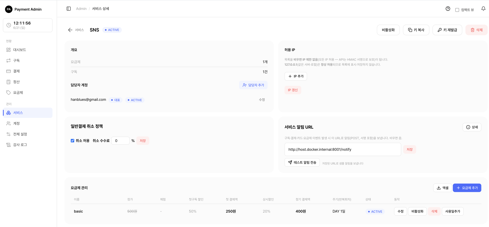
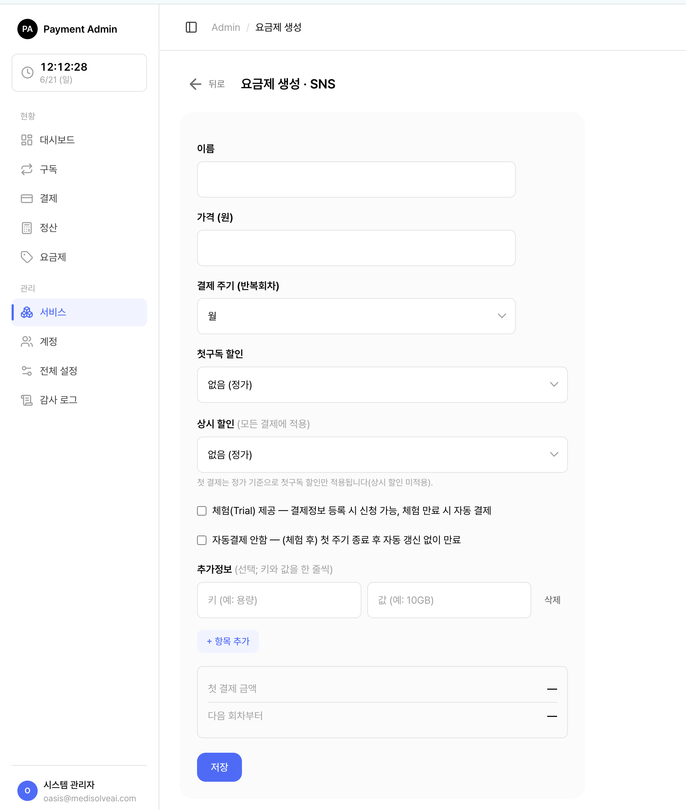

4. 요금제 관리
서비스가 고객에게 판매할 구독 요금제를 만들고 관리하는 화면입니다. 가격, 결제 주기(년·월·주·일·분), 첫 구독 할인, 상시 할인, 체험 기간을 한곳에서 설정합니다.
🍎
4.1 요금제 관리 화면 열기

요금제는 두 곳에서 관리할 수 있습니다. 어느 쪽에서 만들든 결과는 같습니다.
| 화면 | 여는 방법 | 특징 |
|---|---|---|
| 전체 요금제 목록 | 왼쪽 메뉴 요금제 클릭 | 모든(또는 담당) 서비스의 요금제를 한 번에 보고 검색·필터·엑셀 다운로드 |
| 서비스 안의 요금제 탭 | 서비스 메뉴 → 서비스 클릭 → 아래쪽 "요금제" 카드 | 그 서비스의 요금제만 표시. 추가·수정 후 그 자리에서 바로 갱신 |
💡참고: 시스템 관리자(SYSTEM_ADMIN)는 모든 서비스의 요금제를, 서비스 담당자(SERVICE_MANAGER)는 자신이 맡은 서비스의 요금제만 볼 수 있습니다. 담당이 아닌 서비스의 요금제 주소로 직접 들어가면 "없음" 화면이 표시됩니다.
목록의 각 줄에는 요금제 이름, 정가, 첫 결제액, 정기 결제액, 결제 주기, 상태(ACTIVE / ARCHIVED)가 함께 보입니다. 첫 결제액·정기 결제액에 마우스를 올리면 어떻게 계산됐는지 설명이 뜹니다.
4.2 요금제 만들기

- 전체 요금제 목록에서 오른쪽 위 [요금제 생성], 또는 서비스 상세의 요금제 카드에서 [요금제 추가]를 누릅니다.
- 아래 항목을 채웁니다(자세한 설명은 4.3~4.5 참고).
- [저장]을 누릅니다.
- "저장되었습니다" 안내가 뜨고 목록으로 돌아갑니다. 새 요금제는 곧바로 ACTIVE 상태가 되어 구독을 받을 수 있습니다.
입력 항목:
| 항목 | 설명 |
|---|---|
| 이름 | 요금제 표시 이름. 필수. 예: "스탠다드 월간" |
| 가격(원) | 정가. 1원 이상. 예: 9,900 |
| 결제 주기 | 년 / 월 / 주 / 일 / 분 중 선택. "일"을 고르면 일수를 직접 입력(4.3 참고). "분"은 개발·스테이징 환경 전용(4.3 참고) |
| 첫 구독 할인 | 없음 / 무료 / 할인 금액 / 할인율(4.4 참고) |
| 상시 할인 | 없음 / 할인 금액 / 할인율(4.5 참고) |
| 체험 제공 | 체크하면 체험 일수 입력칸이 나타남. 체험 기간 동안은 결제 없이 이용 |
| 자동결제 안함 | 체크하면 첫 주기가 끝난 뒤 자동 연장 없이 만료 |
| 추가정보 | 고객 앱에 보여줄 설명을 "키 + 값"으로 자유롭게 추가(예: 용량 = 10GB) |
💡팁: 폼 아래쪽에 금액 미리보기가 있어 가격·할인을 입력하면 "첫 결제 금액"과 "다음 회차부터" 금액이 실시간으로 계산되어 보입니다. 저장 전에 숫자가 맞는지 확인하세요.
주의: 추가정보에 값만 적고 키(이름)를 비워두면 저장이 안 됩니다. "추가정보 키를 입력하세요" 오류가 보이면 키 칸을 채워주세요. 빈 줄(키·값 모두 빈)은 그냥 무시되니 신경 쓰지 않아도 됩니다.
4.3 결제 주기 정하기 (년·월·주·일·분)
결제 주기는 얼마마다 자동 결제할지를 정합니다.
| 선택 | 다음 결제일 계산 |
|---|---|
| 년 | 1년 뒤(예: 2026-03-01 → 2027-03-01) |
| 월 | 1개월 뒤. 월말은 자동 보정(1/31 → 2/28 또는 2/29) |
| 주 | 7일 뒤 |
| 일 | 입력한 일수만큼 뒤. 예: 10을 넣으면 10일마다 결제 |
| 분 | 입력한 분수만큼 뒤. 자동연장 테스트용 — 비운영(개발·스테이징) 환경 전용, 최소 5분. 운영 환경에서는 생성이 거부됩니다. |
💬분(MINUTE) 주기 주의: 스케줄러 기본 스윕 주기가 5분이므로, 분 단위 구독은 스케줄러가 돌 때마다(약 5분 간격) 갱신됩니다. 더 빠른 관찰이 필요하면 테스트 환경에서
scheduler_interval_minutes설정값을 낮추세요.중요: 결제 주기는 요금제를 만들 때만 정할 수 있고, 나중에 수정할 수 없습니다. 다른 주기가 필요하면 새 요금제를 하나 더 만드세요. (이미 구독 중인 고객은 자기가 시작한 주기를 그대로 유지합니다.)
4.4 첫 구독 할인 (무료 · 할인)
처음 구독하는 고객에게만 적용되는 1회차 한정 혜택입니다.
| 유형 | 첫 결제 금액 | 예시(정가 10,000원) |
|---|---|---|
| 없음 | 정가 그대로 | 10,000원 |
| 무료 | 0원(완전 무료) | 0원 |
| 할인 금액 | 정가 − 입력 금액 | 3,000원 할인 → 7,000원 |
| 할인율 | 정가 − (정가 × 비율) | 30% 할인 → 7,000원 |
🍎쉽게 말하면 "첫 달 무료" 또는 "첫 결제 30% 할인" 같은 가입 혜택을 여기서 만듭니다.
4.5 상시 할인 (정기 결제 할인)
매 회차(2회차부터) 계속 적용되는 할인입니다.
| 유형 | 정기 결제 금액 | 예시(정가 10,000원) |
|---|---|---|
| 없음 | 정가 그대로 | 10,000원 |
| 할인 금액 | 정가 − 입력 금액 | 2,000원 할인 → 8,000원 |
| 할인율 | 정가 − (정가 × 비율) | 20% 할인 → 8,000원 |
⚠️중요: 첫 구독 할인과 상시 할인은 서로 겹치지 않습니다. 첫 결제는 첫 구독 할인만, 2회차부터는 상시 할인만 적용됩니다.
예) 정가 10,000원 · 첫 구독 할인 30% · 상시 할인 20% - 첫 결제: 7,000원 (첫 구독 할인만) - 다음 회차부터: 8,000원 (상시 할인만)
참고: 상시 할인에는 "무료"가 없습니다. 매번 0원이 되는 정기 결제는 의미가 없기 때문입니다.
4.6 요금제 수정
- 목록 또는 서비스 요금제 탭에서 해당 요금제의 [수정]을 누릅니다.
- 이름·가격·할인·체험 등을 바꿉니다.
- [저장]을 누릅니다. "저장되었습니다" 안내가 뜹니다.
⚠️주의: 수정 화면에서 결제 주기는 회색으로만 보이고 바꿀 수 없습니다. 주기를 바꾸려면 새 요금제를 만들어야 합니다(4.3 참고).
참고: 가격·할인을 바꿔도 이미 구독 중인 고객에게 즉시 소급되지 않고, 다음 결제(갱신)부터 새 금액이 적용됩니다.
4.7 비활성화(보관)와 활성화
요금제를 더 이상 새로 팔고 싶지 않지만 기존 구독은 유지하고 싶을 때 비활성화(보관) 합니다.
| 동작 | 버튼 | 결과 |
|---|---|---|
| 비활성화(보관) | [비활성화] | 상태가 ARCHIVED로 바뀜. 새 구독은 받지 않지만 기존 구독은 그대로 유지 |
| 활성화(재개) | [활성화] | 상태가 ACTIVE로 돌아가 다시 새 구독을 받음 |
- 비활성화하려면 ACTIVE 요금제의 [비활성화]를 누릅니다. 바로 보관되고 "보관되었습니다" 안내가 뜹니다.
- 다시 팔려면 ARCHIVED 요금제의 [활성화]를 누릅니다.
💡팁: 구독이 걸려 있어 삭제가 안 되는 요금제는, 먼저 비활성화로 새 가입을 막고 기존 구독이 모두 만료된 뒤 삭제하세요.
4.8 요금제 삭제
- 요금제의 [삭제]를 누릅니다.
- "요금제를 삭제할까요?" 확인 창에서 [삭제]를 한 번 더 누릅니다.
- 성공하면 "삭제되었습니다" 안내가 뜹니다.
⚠️중요: 구독이 한 건이라도 연결된 요금제는 삭제할 수 없습니다. (현재 이용 중이든, 이미 만료됐든 상관없이 한 건이라도 있으면 거부됩니다.) 이때는 "구독이 있는 요금제는 삭제할 수 없습니다. 보관(아카이브)을 사용하세요."라는 안내가 뜹니다.
처리 순서: [비활성화]로 새 구독을 막기 → 기존 구독이 모두 만료될 때까지 기다리기 → [삭제].
4.9 사용일 추가 (구독 기간 연장 보너스)
특정 요금제를 쓰는 고객들에게 무료로 며칠을 더 얹어주고 싶을 때 사용합니다(예: 서비스 장애 보상으로 전원 3일 연장).
- 요금제 줄에서 [사용일추가]를 누릅니다.
- 작은 입력 창이 뜨면 추가할 일수를 적습니다(1~3650일). Enter로 확인, Esc로 취소.
- 확인하면 그 요금제를 쓰는 **현재 이용 중인 구독들**의 만료일·다음 결제일이 입력한 일수만큼 뒤로 미뤄지고, 몇 개 구독에 적용됐는지 안내가 뜹니다.
💡참고: 적용 대상은 이용 중인 구독(이용중·연장·미수)뿐입니다. 체험 중·정지·취소 예약·이미 만료된 구독은 영향을 받지 않습니다.
팁: 사용일 추가는 시스템 관리자와 서비스 담당자 모두 사용할 수 있습니다. (수정·비활성화·삭제와 달리 전체 요금제 목록에서도 버튼이 보입니다.)
4.10 엑셀로 내려받기
목록 위쪽의 [엑셀] 버튼을 누르면 현재 검색·필터가 적용된 요금제 목록이 엑셀 파일로 받아집니다. 서비스 / 요금제 / 결제주기 / 정가 / 첫 결제 / 정기 결제 / 상태 컬럼이 들어 있습니다.
4.11 자주 묻는 질문
Q. 체험 기간과 "자동결제 안함"을 같이 켜도 되나요? 네. 같이 켜면 "체험 종료 → 첫 결제 1회 → 그 주기가 끝나면 자동 연장 없이 만료" 순으로 동작합니다.
Q. 가격을 바꿨는데 기존 고객 결제 금액이 그대로예요. 정상입니다. 변경한 가격은 다음 결제(갱신)부터 반영됩니다.
Q. 삭제가 안 됩니다. 구독이 연결된 요금제입니다. [비활성화]로 새 가입을 막고, 기존 구독이 모두 만료된 뒤 삭제하세요(4.8 참고).
🔗함께 보기: 실제 결제가 어떻게 잡히고 환불되는지는 일반결제와 환불에서 확인하세요.